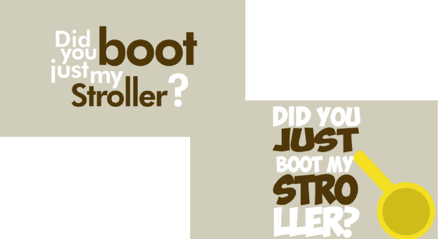
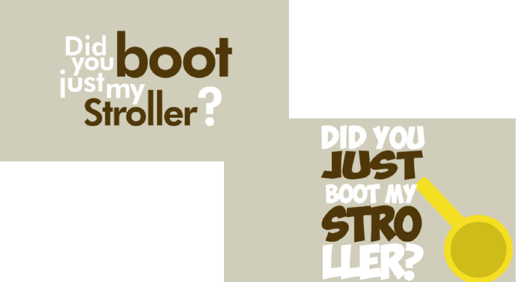
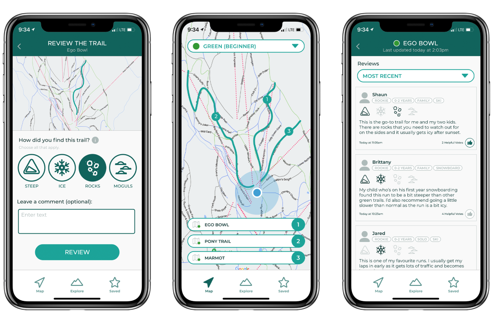
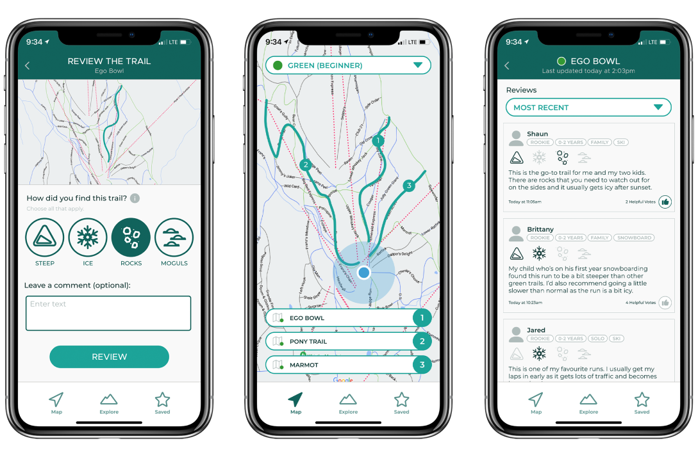

 


Hey, I’m Kelvin.
I'm a multidisciplinary designer based in Vancouver interested in crafting unique experiences through visual design, motion graphics, and 2D/3D illustration.
I am currently a student in the School of Interactive Arts and Technology program at Simon Fraser University and am seeking for internship opportunities this Summer. Prior to attending Simon Fraser University, I studied Information Technology at Kwanten Polytechnic University for two years but ultimately found my way to design.